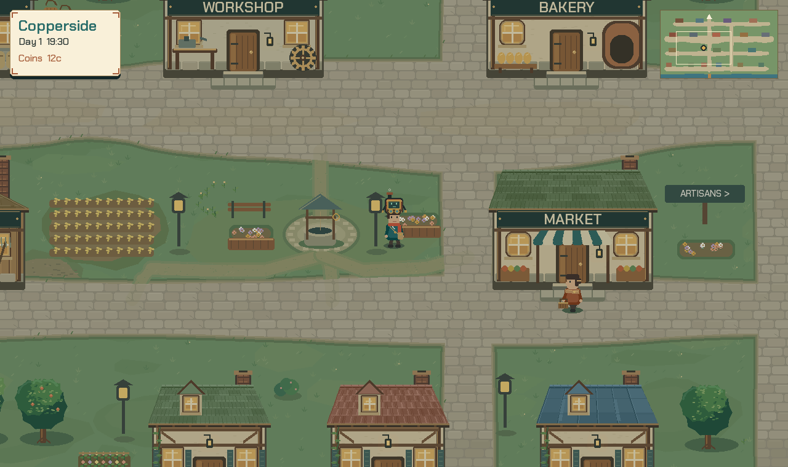

Matching 1280 × 760 gameplay frames. Populated streets and developed eastern sites are staged disposable fixtures. Choose a place and clock time, then switch Before/After. Images keep native pixels.
These additional views advance the same disposable developed town through its real simulation, including purchases, attendance, production limits and evening destinations.
